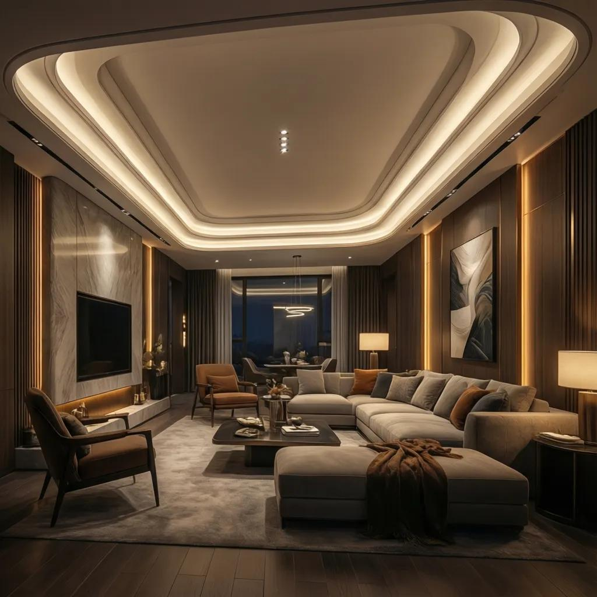
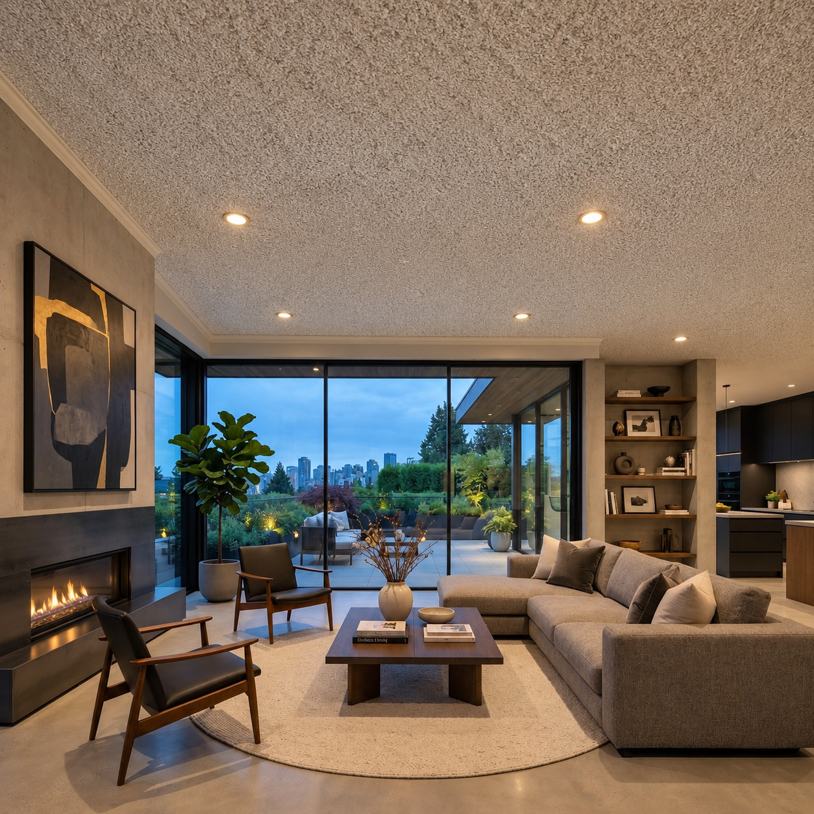
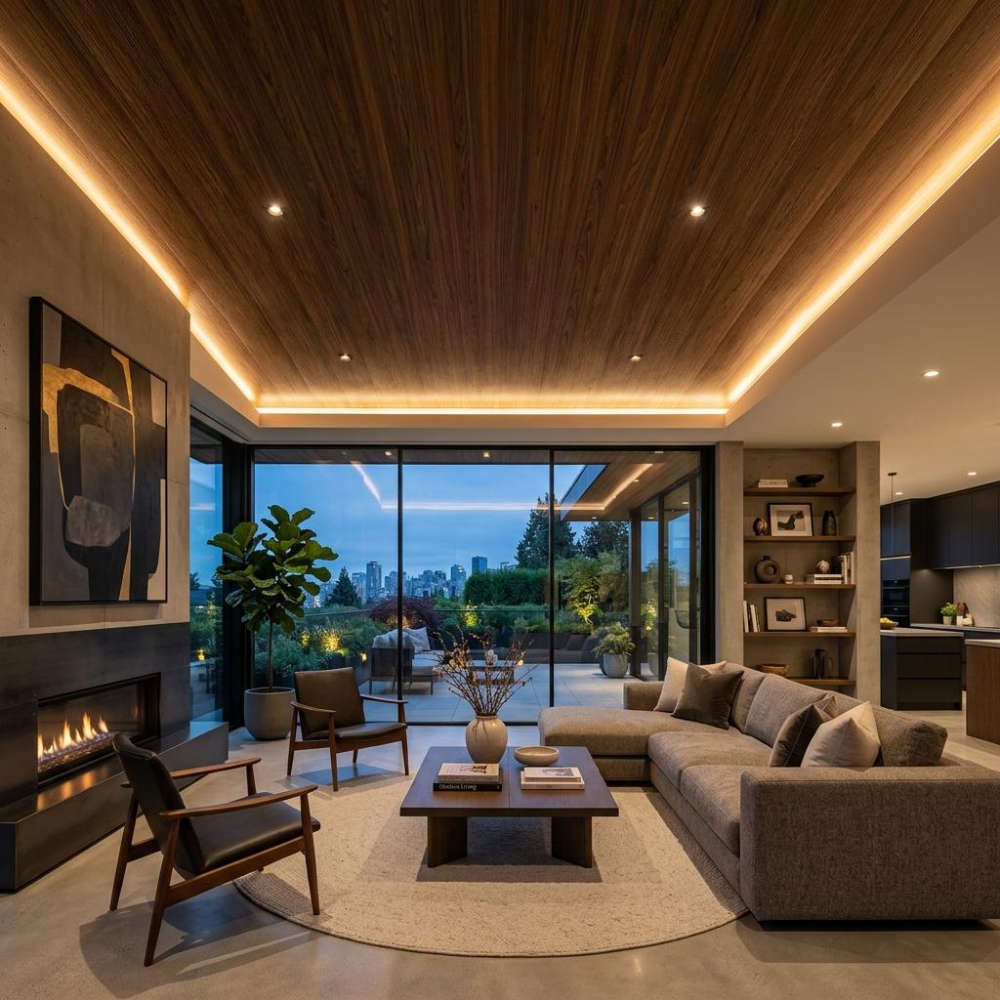

Prepare Carefully
We begin by preparing the space and protecting the areas around the ceiling before the work begins.
Specialty Ceiling Services
From the first look at your ceiling to the final finish, our process is built around careful preparation, controlled work, and attention to the details that make the finished space feel complete.
Removing an old ceiling texture is more than simply scraping away the surface. The condition of the ceiling, the surrounding space, and the finish you want all influence how the work should be approached.

We begin by preparing the space and protecting the areas around the ceiling before the work begins.
Texture removal is approached carefully to avoid unnecessary disruption to the surface beneath.
Once the texture is removed, imperfections are addressed and the ceiling is prepared for its next finish.
The final result should feel clean, consistent, and naturally connected to the rest of your interior.
Every step is carefully considered, from preparing the space to refining the surface and completing the final finish.
We look at the existing ceiling, understand its condition, and discuss the finish you're looking for.
The room and surrounding areas are carefully prepared before ceiling work begins.
The existing popcorn or ceiling texture is carefully removed using a controlled approach.
The exposed ceiling is repaired, sanded, and refined to create a suitable surface for finishing.
The ceiling receives its final preparation and finish, leaving the space cleaner and more refined.

The process changes more than the ceiling. It changes how the entire room feels, creating a cleaner and more intentional finish.


Every project follows a considered process built around preparation, precision, and a clean finish. From the first conversation to the final walkthrough, each stage has a clear purpose.
From the first conversation to the final walkthrough, we keep the process clear so you know what is happening, what comes next, and what to expect throughout the project.
We prepare the room and surrounding surfaces before ceiling work begins, helping keep the project controlled, organized, and ready for the work ahead.
Existing ceiling texture is approached carefully, with attention to the surface underneath and the condition of the ceiling as the old texture is removed.
Once the texture is removed, attention shifts to the surface itself. Imperfections are addressed and the ceiling is prepared for the finishing stage.
The final stage brings everything together with careful finishing and a surface designed to feel clean, balanced, consistent, and complete.
The result is more than a different ceiling. It is a room that feels cleaner, brighter, and more intentional, with the ceiling becoming part of the overall space.
READY TO GET STARTED?
Tell us about your ceiling and what you're looking to change. We'll help you understand the next step and what your space may need.
Get a Free Estimate